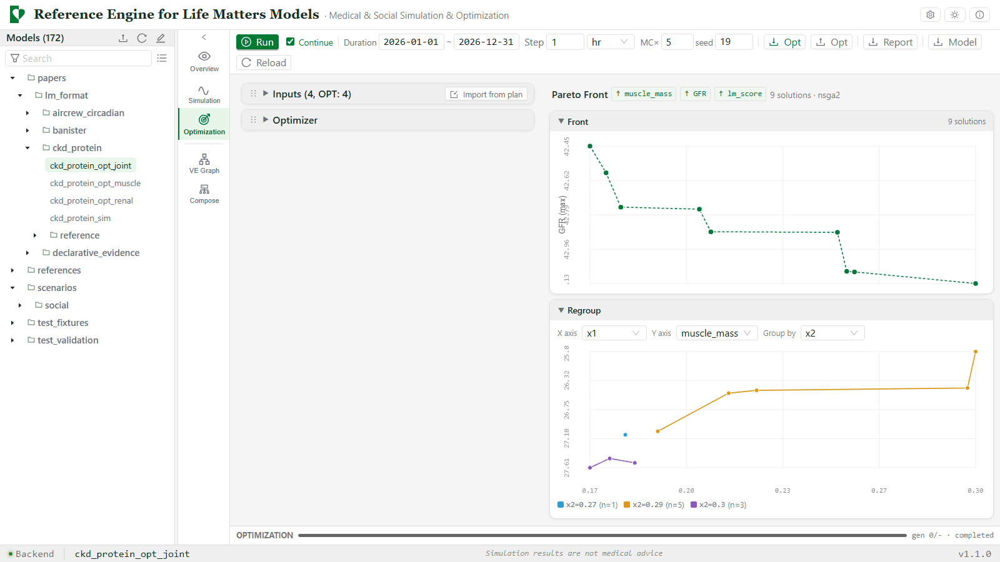

Life Matters
See what each choice costs.
Life Matters turns published research into models of daily life that you can run, so the trade-offs between goals become visible before you choose.
What it does
- Turns the statistical findings of published studies into models written in plain YAML that anyone can read and run.
- Places mechanisms that were validated separately in different papers into the same model, so they interact.
- Searches for the best combinations of decisions. When goals conflict, it shows the trade-offs as a Pareto front and leaves the judgment to you.
How it works
- Pick a model from the library. Each one states its problem, method, result and limitations.
- Run a simulation and watch how the variables evolve over days, months or years.
- Optimize the decisions and read the trade-off front.

What it is not
- Not a medical AI. It does not diagnose, prescribe or advise on treatment, and it does not replace a clinician.
- Not a digital twin of a body. It does not model any specific person or connect to personal health data.
- Not built on human medical data. Parameters come from summary results already published in papers.
- Not a single answer. When goals conflict it shows the trade-offs and leaves the judgment to the reader.
Author, contact and citation
Fan Shen, School of Systems Science and Engineering, Sun Yat-sen University.
Review coverage of the models is limited, and comments and criticism are welcome. Write to shenfan@mail.sysu.edu.cn or shenfan19@gmail.com.
Fan Shen. Life Matters format: A YAML Specification for Behavioral Intervention Simulation and Optimization in Life Dynamics. Manuscript submitted for publication.